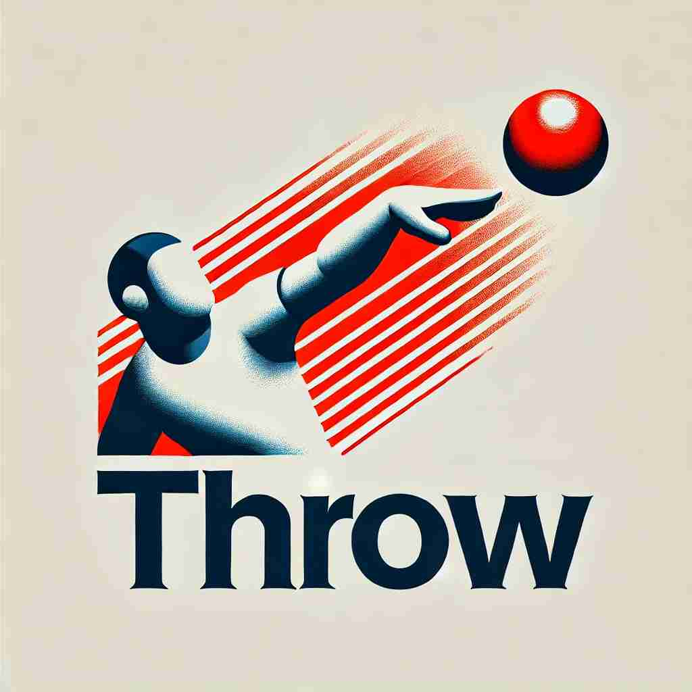

💬 The boy loves to throw a ball in the park.

💬 The athlete will throw the javelin during the competition.

💬 The man didn’t expect someone to throw a toaster in the store.

💬 The child is excited to throw a ball to his friend.
🔈 [θrəʊ]
🗝️ v. to send an object through the air with force using your hand
🖼️ 在一个阳光明媚的操场上，孩子们正在玩扔球游戏。一个男孩用力把球掷向远处，球在空中划出一道优美的弧线，最终落在另一名小伙伴的手中，这完美地体现了 'throw' 的意义：用手将物体用力投掷到空中。
🔍 想象你用手将物体用力抛出的动作，这就是'throw'的核心含义。从这个核心动作，我们可以联想到丢弃、快速发送、使陷入某种状态、组织活动等衍生含义。所有这些含义都可以通过'扔'这个动作来理解和记忆。
💬 The boy loves to throw a ball in the park.
💬 The athlete will throw the javelin during the competition.
💬 The man didn’t expect someone to throw a toaster in the store.
💬 The child is excited to throw a ball to his friend.
🌳 核心词根是 "throw"，表示 "投掷"。它是一个基本动词，没有明显的前缀或后缀。
💡 记忆 "throw" 时，可以联想到动作 "投掷" 的画面，比如投掷球或飞盘，帮助强化其基本含义。
🗝️ v. to get rid of something you no longer want
🖼️ 在一个整洁的客厅里，女孩正在整理旧衣物。她拿起一件不再合身的毛衣，决定把它扔进垃圾桶，以此表示她对旧物的舍弃和清理。这一动作展现了 'throw' 表示丢弃不再需要的东西的含义。
💬 I threw away all my old magazines.
❓ 像扔掉物品一样丢弃不要的东西
🗝️ v. to direct or send quickly
🖼️ 在一个忙碌的办公室中，助理急匆匆地把一份重要文件交给离她几步远的同事，动作迅速而准确。这样的场景体现了 'throw' 作为快速发送或指引某物的意思。
💬 She threw him an angry look.
❓ 快速投送，如同用力扔出
🗝️ v. to cause someone or something to be in a particular state or position
🖼️ 在一场激烈的国际象棋比赛中，一个棋手突然移动他的棋子，迫使对手不得不重新思考策略，这一举动将对手的计划彻底打乱。这里 'throw' 体现了将某人或某物推入特定状态或境地的意义。
💬 The news threw her into a panic.
❓ 将某人或某物置于某种状态，如同扔到某处
🗝️ v. to organize an event, especially a party
🖼️ 在一个热闹的厨房里，朋友们正在为即将到来的生日派对做准备。他们忙着挂装饰品、布置餐桌，为准备一场精彩的派对而亢奋。'throw' 在这里表示筹备和举办一个活动的含义。
💬 They're throwing a surprise party for her birthday.
❓ 策划活动，如同将各种元素"扔"到一起
🗝️ v. to confuse or mislead someone
🖼️ 在一个悬疑的电影中，侦探故意给嫌疑犯提供一些混淆视听的信息，以此让对方对案件的真实进展感到困惑。这个情境中，'throw' 用来表达使某人感到迷惑或误导的意思。
💬 The unexpected question threw me completely.
❓ 使人混淆，如同将人的思维"扔"乱
🗝️ n. a single act of throwing something
🖼️ 在镇上的年度趣味比赛中，一个小伙子站在标记线上，手里拿着一只飞盘，准备全力一掷。他的专注与投入展示了 'throw' 作为一次投掷行为的意义。
💬 With one throw, he knocked down all the pins.
❓ 由动词转变为名词，表示扔的动作